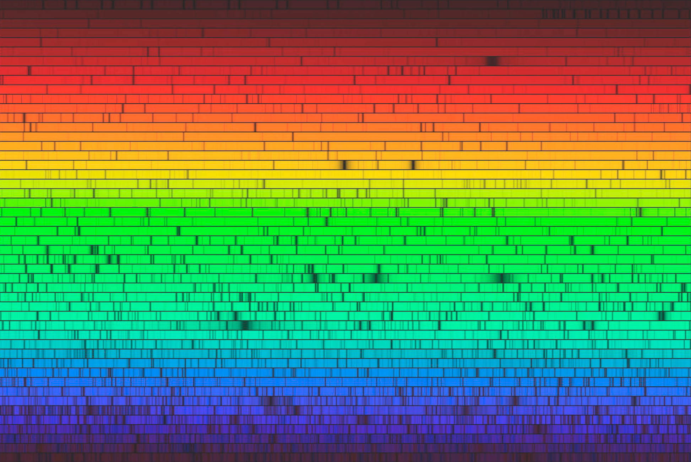

full contents of the book:
Nothing & Dot (Prolog)
Purpose
Contemplated
Entity
Consciousness
Two-Aspect (dualistic) Entity
Fourth dimension and ...
Society and Humanity
Fifth dimension and ...
Firstoccurence
Act of the “I”
The Proc.of study.the Act of "I"
The Meaning of Being
Development of Entity
The Collective Reality
the Entity Development System
Echo (Reflection)
Real Aspect of the Global I
About Worldview
Space-Time
Attitude toward Yourself
Attitude toward your body
Laziness
Fear
Hope (...for Miracle)
Adaptation
Identity of Personality
Relation [ Reason | Body ]
Free Will
Hard problem of Consciousness
Indistinguish and Identity
Matter
Gnoseology
Epistemology
Separation
to the home page
— Chapter Thirty —
————————————————————————————
————————————————————————————
THE HARD PROBLEM OF CONSCIOUSNESS
Always wanted to answer some questions, simple in content, but incredibly tricky. The most difficult of them were beyond our capabilities, however, not because of the inability of reason, but precisely because of the lack of the most important (intermediate) data;
For those who have not read our study from the very beginning, it will be more difficult not to "The essence of the answers" to these questions, but to understand and accept the "Conditions", allowing you to look at the problems differently, or practically "from the inside". Therefore, we strongly recommend avoiding misunderstandings when comprehending the meaning, and to study the previous material;
Here we will discuss problems that, to this day, are, let’s say, ‘topical for philosophical society’.
Many questions contain special oddities for the ‘seekers of Truth’ themselves. We invent questions and solve them ourselves, and we are not ashamed to openly assert the transcendental Essence of problems, but we research and find answers. A funny conclusion suggests itself about the validity of the statement: “We are not able to think and reason about “things” that will forever remain incomprehensible.” Consequently, the Question about the ‘incomprehensible’? is not such, otherwise we would not even be able to formulate it properly. This does not depend on the simplicity of the words in the question – it would be impossible to understand it in any form of presentation. But, the point is not in the certainty of the future, but in the “Systemic error” contained in the Essence (and meaning) of the proposed question, but it is impossible to ask a question that has no answer. It should be understood that even with an “adequately posed question” – the answer to it may not be pleasing. Often the reaction depends on the current plans and actions of the researcher, on which he most likely spent years, but the answer simply tore it all to shreds;
What does it mean to be someone? - a creature of some kind.
This is the famous 'Bat Problem', which we will reflect on (...without references, quotes, or other criticism);
If we delve deeper, to the individuality of a person, his person with subjective views on life, and other details, then we will agree with the inability to understand - What does it mean to be another person? ... not to mention a mouse. To imagine Oneself as another person will be orders of magnitude more difficult, that is, absolutely impossible, than as a bat, due to the ‘order of magnitude superior’ level of development of reason and mental abilities. Or, let the test subject turn out to be a complete idiot - will it be possible to imagine such a thing? No. It will not be possible to be another person “yet” (“yet” - we will leave it to the assumption of future technologies that will allow us to look at the World with someone else’s eyes). However, aren’t we researching the same thing? What does it mean to be Someone flying? - to fly in a dream. The same thing is to experience the practice of echolocation on yourself. For this, you will have to concentrate in a specific way;
But Being Someone can be developed purely psychically, and more fully, without naming the species. Assume a solitary being that has developed on an uninhabited island. There are plants here, but there is no one independently active, that is, there is no one to compare Itself with (and no one to oppose Itself to). Consequently, in this environment, a being with reason will be able to identify Itself in its Pure form, in relation to what it ate (let us say, bananas);
We suppose that the being will not be able to develop the System of categories, but if he step on a banana, and this will certainly happen, it will turn into mush, but if he step on “It” (his finger), it hurts – the being will figure this out. Through pain, and other feelings, sooner or later, the being will make a conclusion that allows it to clearly define, distinguish “Itself” and “Not Itself”, which in principle is Self-identification [“I”], this is the Act of awareness of “Being Someone”, i.e. “Itself”. The process will be accelerated by its own reflection in water, and through external examination of the body – the study of Self-Construction;;
Now imagine a similar situation (Island), but there are wasps that
“Being Oneself” – one must also learn;
Let's consider Being Someone, from the third person. For example, What does it mean to be a Bat? - first of all, we will clarify that we are talking about "Qualia", the subjective perception of the "Bat" of Its Life Process. Just imagine in the most superficial way what it is - in general terms: "to be able to fly in a tight environment, going around obstacles without colliding with each other, to hear the sounds of its relatives and the flapping of the wings of night moths, to be able to get food - fat night butterflies in complete darkness, to be worthy of its offspring and the title - "Great Bat"» :);
About the hearing abilities of bats: Bats use echolocation of high-frequency sounds. The ultrasonic squeak emitted by bats is in the range of up to 200 kHz. If we study human hearing, we also use the so-called echolocation, which is “normal hearing”, but, in bat this ability is developed much better. Bats “squeak” very thinly and catch reflections from objects – both their own sounds and sounds emitted by their relatives;
Humans also hear reflected sounds, and if we ‘remove’ all reflections, we'll feel ourselves 'deafened on the flat' (to some extent?). There is nothing to be surprised about, the unusual ‘phenomenon of bat echolocation’ can easily be neglected, by and large, it is not at all something that we are unable to understand, imagining it as a property inherent to us. We, of course, do not deny the magnificence of the hearing of Bats, but this is not an obstacle, and not a barrier to the imagination;
Therefore, “Being a Bat”, as the most important philosophical question, will not surpass in importance the question: What does it mean to be an Elephant? – After all, they have a trunk!, that is, we will put at the forefront the ‘problem’: How could we imagine – active actions with our own nose? … living in the jungle with such a nose. Dragging logs with our nose, and driving away insects with it. The eternal question? –42. This is just surprise, not criticism or mockery, but is it possible to succeed in trying to teach mice to communicate with dolphins? – if they “squeak” in the same range :) However, it is not for us to pose “Global Questions” and will have to answer, as long as it is considered an incredibly important problem;
Many researchers are really starting to think seriously about the importance of a specific question about mice, elephants, flies, but the essence is in the subjectivity of sensory perception (Qualia), this affects the interpretation and qualification of objects, and especially attributes, properties, and in connection with this phenomenon, the attitude to all situations (and to the World). We will continue to support the ‘Idea of examples with bats’;
According to the Ultra-idealistic model of the World, it is known that the "Real aspect of the Entity" reads the wave of each Being and this explains the 'Actual Cause of Life'. It is life, that is, the "Life Spark" ('I'), that the "Global aspect of the Entity" endows us with - providing us with this opportunity through the "Real aspect of the Entity". In this connection, relativity to "Consciousness" (Influence by Presence) arises and simultaneously with the arisen relativity – ‘Consciousness' Realizes Space (and: Space - Is relativity to ‘Consciousness’));
Consistent research will determine Space as primary, and only then the emergence of relativity to Consciousness. But, when the “Entity” reading ‘the Essence of a specific being, i.e. its wave and the experience contained in it’, this manifestation arises instantly, and time in this manifestation turns out to be precisely the sensory content within Space - in the conditions of reality. At this moment, reason already becomes accessible, therefore the Being has the opportunity to carry out the Act of Self-authenticity and realize “Own Being”;
Here, and Thomas Nagel's claim is confirmed, that 'Having access to Consciousness means Being Someone', including the Bat (same) is not a special exception, but we
As for subjective apperception in the ability to detect ultrasound, it should be noted that any perception is purely subjective and it does not matter at all whether it is a bat with echolocation, an elephant with a trunk, or a person who has neither one nor the other. The world of each living being is isolated. At the current stage of development, it seems impossible to perceive the ‘Other World’ using your own human reason.
Let's say a “micro-chip”
In conclusion, it is necessary to make the statement: To understand “What does it mean to be a Bat?” one must either be God, or directly a Bat, and there is no other way than an idea, quite possibly approximate (with the help of science), but not “adequate”;
Perhaps sometime in the future there will be a way to access Consciousness, in the sense of the content of the storage of experience, if such exists at all, and in addition to this a decoder is needed to be able to read the wave. At present we know nothing about this, just as we have not discovered a method of transmitting data from Consciousness to the "address" of a specific Reason. However, all this may turn out to be nonsense, because it is possible that all the content of experience arises instantly and exists without the need for storage, and then simply disappears - which is what we experience as the "time of continuous activity" (wakefulness), from awakening to the "deep sleep phase";
Be that as it may – if you read the wave of a Bat, or any other creature, acting as, or similarly, as the “Real aspect of the Entity” does, then “anyone” will become a Bat. But, will not remember this experiment and, “already someone else’s intentions”, as well as the data available in the “Experience of a specific Bat” – containing, among other things, the Essence of Its Self-identification, and the history and the entire stock of memory of the bat, including the capabilities of reason and ‘mind’ (if it exists), knowledge, emotions, situations, as well as the experience extracted from them. If you manage to return later, it will be discovered that the experience of the bat has not been preserved.
So, let us continue the study of "Qualia" (subjective perception). Due to the worldview, the specificity of the Ultra-Idealistic model, we explain this "phenomenon" quite simply and associate it with the complete isolation of the World of each. Reality in such conditions, although collective, is nevertheless contemplated individually
Situations are formed from subjective experience and averaged in an abstract "objective field", synchronizing with the reality of each participant (if they exist), extracted as a new subjective experience;
The color of the “object” is “its” attribute, which in turn is subjective. It is absolutely impossible to see or find out the real color of the object – in the contemplated frame of reality of another participant in the situation. We can “trust the respondent at his word” when receiving answers to questions about the perception of the colors he sees, and direct correspondence to some standard patterns (even if very accurate in his opinion), in any case – they will have an exclusively tonal similarity, and not very accurate. What shade and what color does the respondent actually see? – it is impossible to establish (no matter how it may seem). For example, some object is red. The respondent says: this is red, although he sees blue, and calls it red. He was taught this since childhood, when they said: This is red! After which, everything that he sees as blue, he calls red. Perhaps this respondent confuses the names of all the colors?, but there is no way to check this. Most likely, each person sees colors exclusively in their own way – subjectively. …So strange;
We have come to the "Essence of the Qualia Problem" - subjective attributes cannot be compared, and cannot be established as factual, but there is no "Problem" in this, or it is not formulated, or perhaps "It" is also understood subjectively? We propose to pose the Problem as a Task with a Question: What colors do we see? How, that is, by means of what + for what or why, is this phenomenon realized? A complex question, to which there are certainly answers from the position of the Ultra-Idealistic Model under study;
Assume a situation in which there are "green cucumbers", but at the moment we have turned away and are observing the actions of the gardener. When we turn back and look at the cucumbers again, they will be green again, but under conditions in which nothing happened that could radically change the color of the cucumbers to black or yellow, for example. It is known that they can be yellow if they are not watered enough, or because they are overripe, and they can be black if they are painted, or exposed to the fire of a gas burner;
Initially, the color of cucumber has historical roots, when
The mechanism of realization of ephemeral images and illumination of particles, in the case of a cucumber, is no different from everything else and "Consciousness" realizes a cucumber as an Idea, at this moment certain conditions are applied to it, on which its current state depends, including color - usually it is "green", but looks subjective - "in the color of a cucumber". In the sphere of virtual space, objects are realized through sensory perception of luminous points, we call this show "illumination of particles" - these are the "Contemplated Particles" that our science "Physics" studies, and everything else is static and has a wave nature. This reasoning concerns only the "Color Qualia", with all other attributes it is necessary to consider in a different key - characteristic of other methods of perception and realization of reality, that is, in the ultrasonic transmission there is some specificity, it is quite possible that the Bat realizes Its Space in an extremely specific way, with objects, the data of which are represented (as a basis) not as we do through the "Photon Echo", but through the "Sound Echo". The principle is the same, but - from "our position", the speed of operation of such a mechanism should be ~875,000 times inferior to the "Light scheme" familiar to us (perhaps this is not easy to prove);
Now we need to understand the purpose and reasons why almost all objects have color and other attributes. Some animals change color, quickly camouflaging themselves to match the color scheme of their surroundings - they use color for defense and for a sudden attack on their prey. That is, such a huge bonus as a gift - it is impossible to ignore when discussing this topic. Yes, of course, you can just smile and say - this skill has been developing for several million years, and has nothing to do with Consciousness, especially when studying the ‘Qualia phenomenon’. This
But we believe that such a long formation of this feature of color control arises due to the realization of the bases, just as the Strange Cube (p. 92) appeared due to the necessary content of the convolution. “Scientists of the recent past” claimed that a dog cannot distinguish colors, later they abandoned this idea and began to claim about specific, or some colors, which a dog sees completely differently, ... i.e. not like a person. What does it mean to be a dog? Why do we wonder about ‘Qualia’? – if those Scientists know everything :(
… however, we’ll continue to explore, hoping to find something interesting and useful (besides what they found), for development any ‘little thing’ is important, and in this matter there are no little things. In order to ensure this process, we (every creature) need to maintain not only our own viability, but also increase the population size – including protection and care for our own lives, and for the safety of our fellow tribesmen. The camouflage coloring of animals is directly related to development - it provides the functions of protection, attack, and attractiveness to a sexual partner. Each of these important aspects is enhanced by color on which the effectiveness of actions and efficiency depend;
The color of plants. On the one hand, this is attractiveness as food for many creatures (herbivores or omnivores), on the other hand, all plants strive to expand the range of the species - by attracting animals they will be eaten, and thus, with excrement, seeds (and spores) move over significant distances;
Many plants, on the contrary, have camouflage colors, blend in with the surrounding plants, and do not want to be eaten - in order to maintain their current position, expand, strengthen in a specific place. One way or another, as it turns out - everything is connected with Development;
The color of inanimate objects is based on the fundamental paradigm, with the generalization “World for Alive” which we ‘observe in the moment’ of the “Firstoccurrence” (p. 76). The coloring of some objects serves as a cover, and it is so precisely because there are animals or other creatures nearby that need cover, whose coloring matches the environment, or they are able to adapt to it. Objects (‘elements of the environment’) with their color create psychic harmony, and contribute to rest, relaxation … and even creativity;
"Real aspect of the Entity", reading the wave of each concrete being - affects Consciousness in such a way that the "content of reality" corresponds to its level of development, to create possibility of extracting precisely timely, potentially accessible experience. Just look at archaeological artifacts, which were easier to find 1000 years ago, but these finds did not exist - they were realized when became necessary. All historical facts were discovered at the time of their relevance, and only as a component for development, in some aspects that are perhaps not always clear to us, but we always find what we are looking for with sincere interest ("Ask, and it will be given to you; seek, and you'll find; knock, and it will be opened to you: for everyone who asks receives, and he who seeks finds, and to him who knocks it will be opened.” Matthew 7:8);
"Qualia" (subjective, individual) is one of the most striking obvious signs of the presence, and isolation, of 'One's Own World', potentially Separate World of every being. Like the construction of the World as a whole, individualism serves the possibility of extracting a unique <and subjective> experience, for the purpose of the 'Infinite development of the Eternal Entity' (the opposite seems tautological, but it is so);
In conclusion on the issues of principle, that is technically – “How is color realized?” We define the following: it does not matter how and where we see (contemplate) – anything contemplated is an illumination of particles. When we begin to divide “things” into parts, the manifested is contemplated not differently, but exactly the same way. Consequently, the ‘principle of contemplating color’ itself is not within the competence of metaphysics. We believe that this issue pertains to the subjects of neuroscience. If everything contemplated is an illumination of particles
In the study of the surrounding World (Compton, Arthur Holly; 1927) photons were discovered which (p. 9), when reflected from an object, ‘carry information (?)’ about the Contemplated. As if in their composition, in their behavior* (or their trajectory) there is something specific that allows transporting (delivering) data, or is them, however, the photons themselves remain invisible, and this fact indicates that the photons are not data, but perform the role of a carrier; Здесь и возникает вопрос: Here the question arises: Why, when looking at an object, the light flux from it is decomposed in a color spectrum (consists of specific colors) and, when measured precisely, is unique?
*by the behavior of photons, here, we mean a photon wave and we believe that the photons themselves, as particles, do not exist, we see the data themselves (...is the object realized in parts?);
Let's say (in terms of uniqueness), this is the spectrum of a specific object, which is unique (because any object is unique), and therefore cannot coincide with another spectrum. It can be similar to another, but cannot be identical to it (if these are two identical-looking objects, for example, two pood weights); That is, the light reflected from an object (and the spectrum) is unique to the same extent as the object itself. It follows that the spectrum contains information not only about composition of the object and other characteristics, but also about its form. If we receive data about an object exclusively through those carriers that affect contemplation, then the form, color, and characteristics are also contained in the spectrum, since the spectrum itself is nothing more than the decomposition of light (from emitter) into individual frequencies through ‘splitting’, and the ‘spectrum phenomenon’ is data (possibly in the wrong for us format) flowing from ‘Consciousness’ to the ‘Real aspect of the Entity’ as a potential experience of (my/your) ‘I’;
* * *
It is important to draw the audience's attention to the fact that this is light from any source, but we suggest considering the Sun, although there is no fundamental difference at all. Don't you find it strange that we do not see photons or the beam of light itself? It is not difficult to check if you look at the rays from the side - if the air is clean, the beam of light is invisible, and we know why: Because the Sun (like other objects) is not realized when it is not in the field of view (and the point of concentration), around the corner, or behind your back, for example - we already know that only what is necessary is realized. But, there are many other (important) oddities here:

fig. 20 / Visible Sun spectrum. The volume (amount) of data is staggering.
Pay attention to the possibilities, to the ‘algorithmic capacity’, which is visible to the naked eye. This also refers to the volume of data that can be placed in such an intricate encoding. By operators we mean all the components of this picture, but they are implied by a gigantic number of “processes occurring on the Sun” (is that how we understand it?).
However, each of those processes has nothing to do with chance, and contains some Algorithmic Meaning, or is directly data intended, possibly for all people (creatures) showing activity, or for one Entity, but necessarily extracting some experience;
Here, once again, we are trying to convey to the audience that the Sun, as an Emitter (it shines beautifully ) – transports data, which is why we see It, just as for the same reason we see any source of light (and source of any particles), which we use as an Emitter of “raw data”, i.e. from ‘Consciousness’.
So, if the data is delivered by particles, - we understand that they belong to the last object and cannot be from the previous one, we discussed this (p. 137), as well as the fact that all sources of particles are a Single Emitter;
Important and interesting question:
If we receive data from the object of the last particle reflection - where did the previous data disappear?
We see a huge amount of data in the spectrum of sunlight, but once it is reflected, it is no longer contained that data in the spectrum. In the physical world this is an anomaly, since nothing can just disappear, but it does. There is an answer: it lies in understanding that the previous content of rays (data) is necessary only as one of the bases for the fact of contemplating objects. We imagine it like this:
Contemplated object <– particles (photons) <– cause of particles Sun <– cause of Sun (in spectrum+…) …etc.
By realizing one object (at the point of concentration, attention), all its bases are realized, that is, the position of the object relative to other objects depending on the situation. This entails the need for an emitter, a light source is realized (for example, a light bulb, the Sun, a reflected light flux, which also has a base). That is, the Emitter acts as a base for realized "things" and "events". Objects can be realized in the dark (if there are no photons), then there will be corresponding bases, for example, electronic (tactile sensation) when touching the surface of an object, or other radiation, or infrared, when the object can be detected using a thermal imager, etc.
We see these ‘Data-Laden Rays’ when we look at any object, so they appear to us in the form of an object. By the way, if you look at an object through very dusty air, the object appears unclear, very blurry, which confirms the transport of data, because the data on dust particles begins to prevail and the object basically disappears, since there is not enough data for its implementation. Of course, we will explain it according to the stereotype - dust obstructs visibility, on the one hand this is true, but on the other hand, something else is implied by this.
If we see opportunities – the Entity already uses them;
It seems very simple - direct rays from the source are visible because they contain data from the source itself. "Rays from a light source are only light" - until we show interest and start researching after which a 'correspondence to tungsten' is found in the spectrum (if it is an incandescent lamp). One can try to challenge the statement by contrasting the 'researcher of the light source' (us) -> 'manufacturer of electric lamps'. Such an argument is incorrect due to a 'complete isolation of the World of each being', not excluding researchers and manufacturers, that is, the lamp is initiated and realized in reality by the manufacturer, becomes one of the objects-participants of the situation, and is delivered in the synchronization data stream to other participants, who will be (it is) the researchers;
So - a lantern, and any other source of light, is one of the manifestations of the "Emitter", but if we begin to study It, we will get everything we know about the production of lamps and other lighting devices, by what laws and principles they work, and what is needed for this. But, at the same time, such a study will not contain the Essence of the true purpose of the lamp - we will study the contemplated, its cause and history, which did not exist before the moment of interest and study.
Yes, we seem to understand that a lamp is needed as a lighting device, but it is need as a kind of ‘requirement from nature’ for the purposes of development – ours, or the Development of the Entity (it is the same), therefore, we should not raise the issue of violation of freedoms and exploitation;
Consider a fire in the forest as a source of light caused by a lightning. It was pitch dark at night before the fire, nothing could be seen, and suddenly – such an active obsession with contemplative reality. Obviously, having reached a certain point of experience, “Consciousness” changes the situation to a more meaningful one (in practice, this is reflected in significant changes in the extraction of experience). We can imagine that, after pass the area illuminated by the fire, we turned on a flashlight (this is our right to make decisions) – however, everything that happens, the situation as a whole, seems to be a priori closely connected with this action (turning on the flashlight), which becomes clear, but later, or after some culminating moment. That is, “Consciousness” ‘by any available means “turned on the light” to implement a certain plan’, so that we would have the opportunity to extract experience valuable for the Entity and acquire it;
* * *
Returning to the essence of the question of Qualia, the conclusion follows that the reason for the implementation of subjective properties is the need for development. This may appear to indirectly affect all (or one) participants in the situation, as the background, ordinary coloring of buildings on the streets of a metropolis, or the usual feeling of a slight burning of the skin of the face from a breath of wind on a February morning, as well as the main parameters, then the color plays the most important role, when a completely white foal (albino) is born from black parent horses, …or, your lawyer appeared in court in a yellow suit with a vulgar cane;
The Entity influences Consciousness in such a way that situations are realized as effectively as possible, providing the possibility of extracting as many diverse experiences as possible. Dynamically changing parameters, attributes, and properties of objects significantly expand these possibilities. This is the whole ‘Meaning of Qualia’, that is, the reason for the realization of color, temperature, and other, including tactile characteristics of objects. In a nutshell: Qualia (subjectivity) is one of the most important Components of the “Entity Development System”;
In addition, it should be borne in mind that 'any
read next chapter >> << back